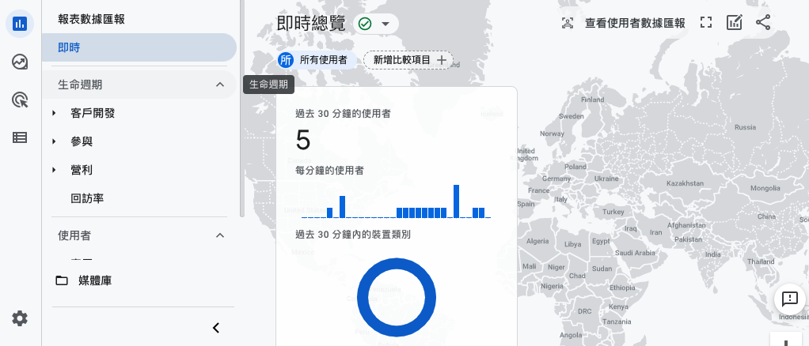
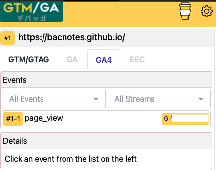
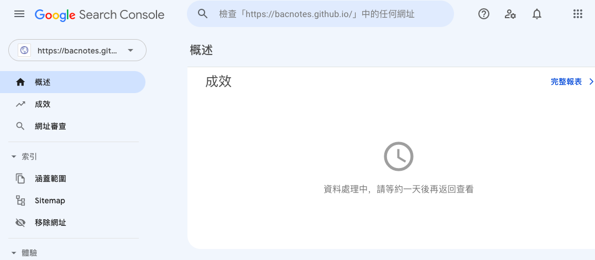
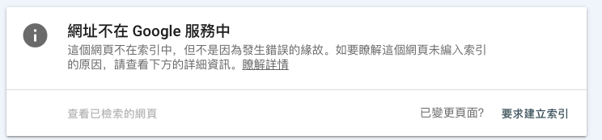
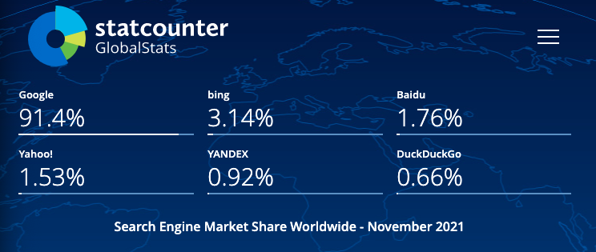
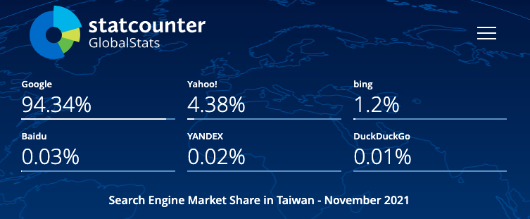

什麼是 Google Analytics & Google Search Console
Google Analytics：分析流量來源與站內行為表現
- 可以看進站管道分布，包含直接流量、自然搜尋、社群網站、其他網站連結導入或是來自廣告等等
- 可以了解到達網頁(landing page)集中在哪些頁面
- 觀看使用者類型與進站後的使用者行為，像是停留時間，觀看了幾頁，跟離開頁面
- 確認是否跟原本規劃的網站體驗流程相似，或是在哪些頁面容易流失客戶
- 電商網站可以設定電子商務觀看電子商務報表(轉換率/收益/客單價等)，由於我們只是單純的部落格，未來如果有機會的話再來介紹
Google Search Console：分析自然搜尋流量與站外排名
- 可以從成效報表觀察流量的變化，曝光 > 點擊 > 點閱率 > 排序
- 分析有哪些關鍵字跟頁面帶來流量
- 分析自然流量的來源是來自哪些地方
- 定期提交 sitemap 幫助網址被收錄，或是移除想拿掉的網址（sitemap 記得也要同步拿掉)
- 確認網站還有哪一些待改進的體驗
安裝 Google Analytics
- 登入你要使用 GA 的 Google 帳號
- 進到 https://analytics.google.com/
- 填寫帳戶名稱，資料共用設定這部分可以自行判斷
- 填寫資源名稱
- 填寫商家資訊
- 接受 Google Analytics(分析)服務條款合約
- 選擇平台(我是部落格所以選網頁)
- 填寫網站串流網址跟名稱
- 會得到一個評估 ID G-xxxxxxxx (舊版為UA開頭)
- 把評估 ID 貼到 config 檔案即可
GA4 將跨裝置的使用者行為串接起來，相較過去著重在停留時間、頁數，改以事件為核心的分析主體，對於數據的解讀方便許多
使用 GA4 的即時報表確認資料是否已開始傳入
或透過GTM/GA debugger套件確認是否有反應
ok 看起來成功囉！記得也檢查一下 404 頁面有無反應唷！
安裝 Google search console
- 建議使用跟 GA 一樣的 Google 帳號
- 進到 https://search.google.com/search-console/welcome
- 選取資源類型，若跟我一樣是使用 GitHub pages 服務選右邊
- 填寫網址
- 驗證方法很多，因為剛剛已經安裝好 GA，帳號有編輯權，直接點第 3 種的 GA 驗證按鈕
ok 進到了資源頁面了！一般來說會需要等個 1 天時間跑資料
在網站根目錄下建立 robots.txt
把 robots.txt 放在網站下的根目錄，使用hexo放在source資料夾下即可
下方是一個常見的範例，網址填入自己的版本
|
|
＊Google 支援所有格式的標準 Sitemap 通訊協定，但目前不支援在 Sitemap 中使用
到 Google Search Console 提交 sitemap
生成靜態網頁的時候會自動產出 sitemap 檔案
網址是<你的網站名>/sitemap.xml e.g. https://bacnotes.github.io/sitemap.xml
提交位置在 Google Search Console 索引區塊的 Sitemap
輸入你的 sitemap 網址即可，一般是 sitemap.xml
使用 Google Search Console 的「要求建立索引」
發布文章後，會希望可以盡早被爬蟲爬取建立索引，hexo平台會自動生成sitemap 檔，很方便操作更新sitemap，但公司的行銷人員，可能不一定可以迅速取得工程師的即時協助
這時候可以點 Google Search Console 上方的輸入框，輸入文章網址，按下 enter就可以建立排程請爬蟲來看看這個網址
(也可以點側邊欄成效下方的網址審查，也會 focus 到這個框框)
等待一段時間跑出結果
點下方的「要求建立索引」，就會跟 Google 提交建立索引的要求且進入排程，爬蟲就會依照排程來看你剛剛提交的網址了
跟 Google 提交 Sitemap 完之後，其他的搜尋引擎也需要嗎？
我們用Statcounter看看目前搜尋引擎各家的市佔率
Statcounter 是一個網站流量分析工具，主要提供網頁瀏覽器跟搜尋引擎的使用分佈的訊息
以下是上個月各家搜尋引擎全球市占率，Google 有 91.4%的市佔率，而其他家(bing, Baidu, Yahoo!)市占率大約都在個位數
由於我們的使用者主要是在台灣，把條件設定成台灣
Google 還是一樣市占率最高，且比剛剛全球數據的市佔率還高，為 9 成 4
看起來我們之後 SEO 還是專心於 Google，畢竟台灣大部分的使用者都使用 Google 搜尋
最後，爬蟲大大快來我家吧